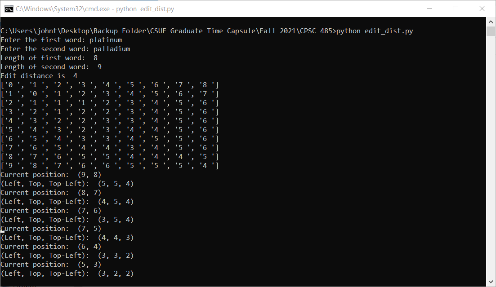
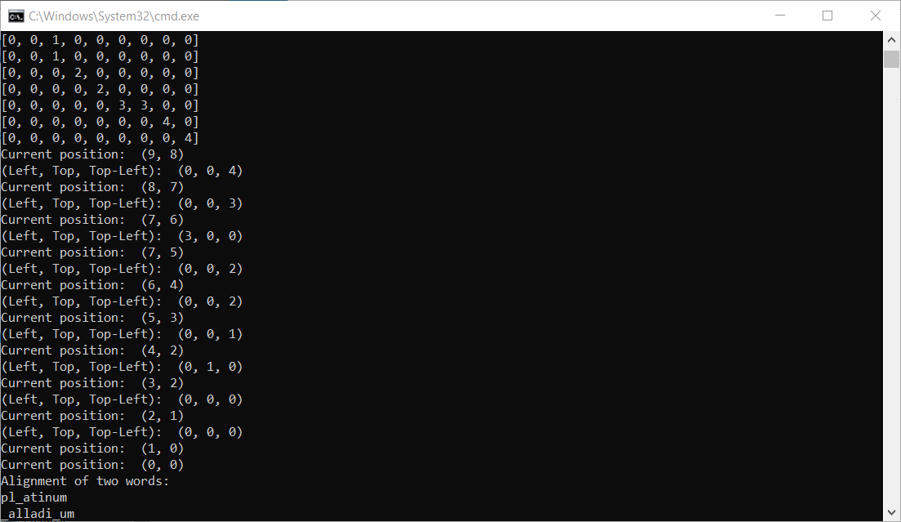
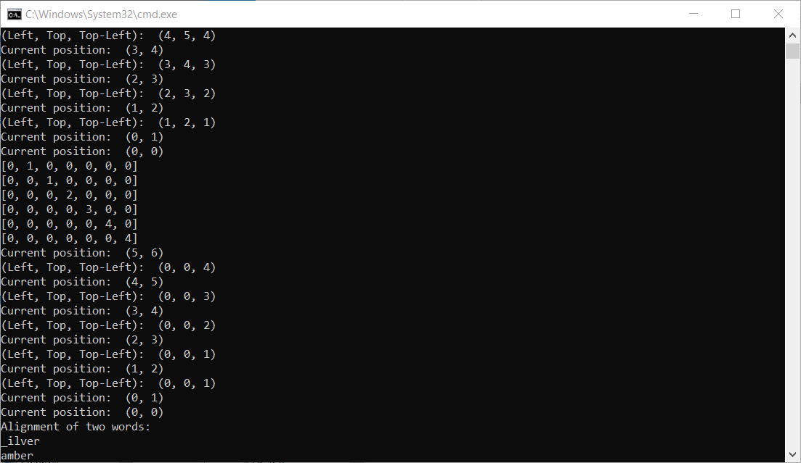
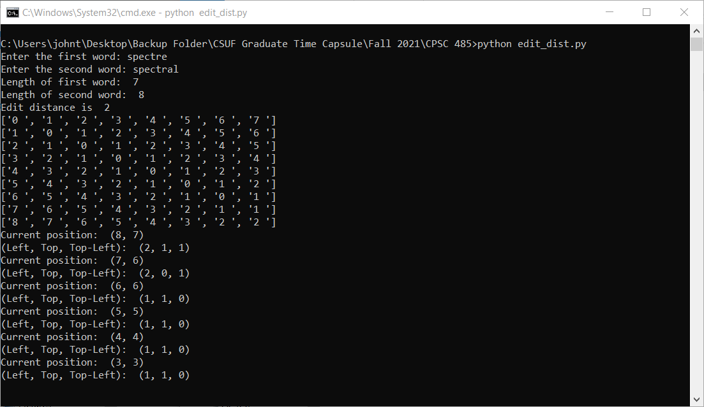
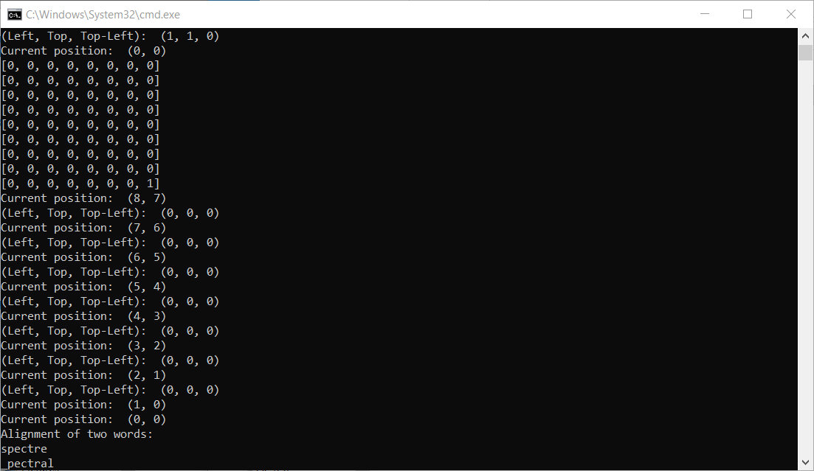

Algorithmic approaches to biological problems. Specific topics include motif finding, genome rearrangement, DNA sequence comparison, sequence alignment, DNA sequencing, repeat finding and gene expression analysis.
List of skills learned:
Screenshots: